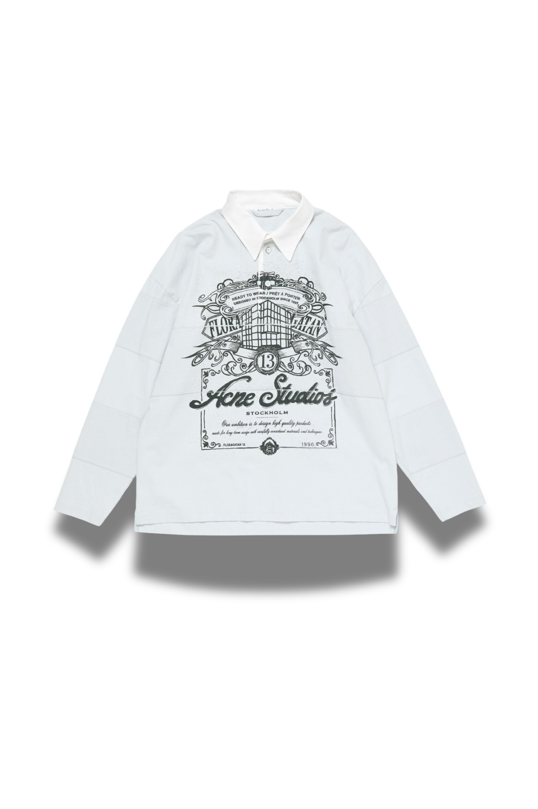
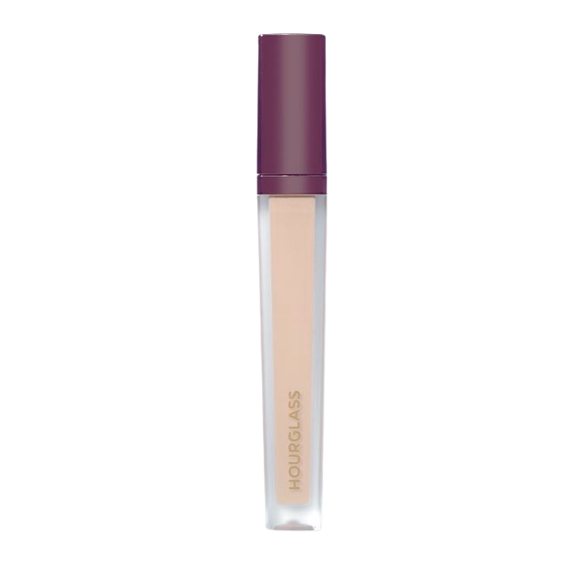
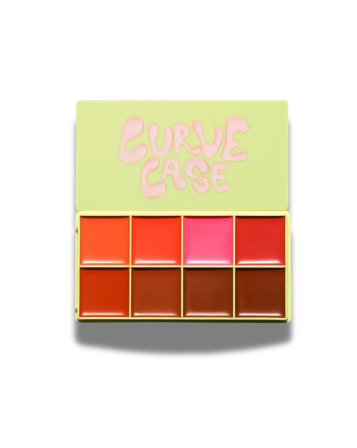
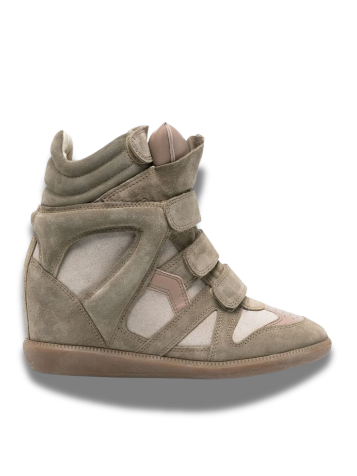
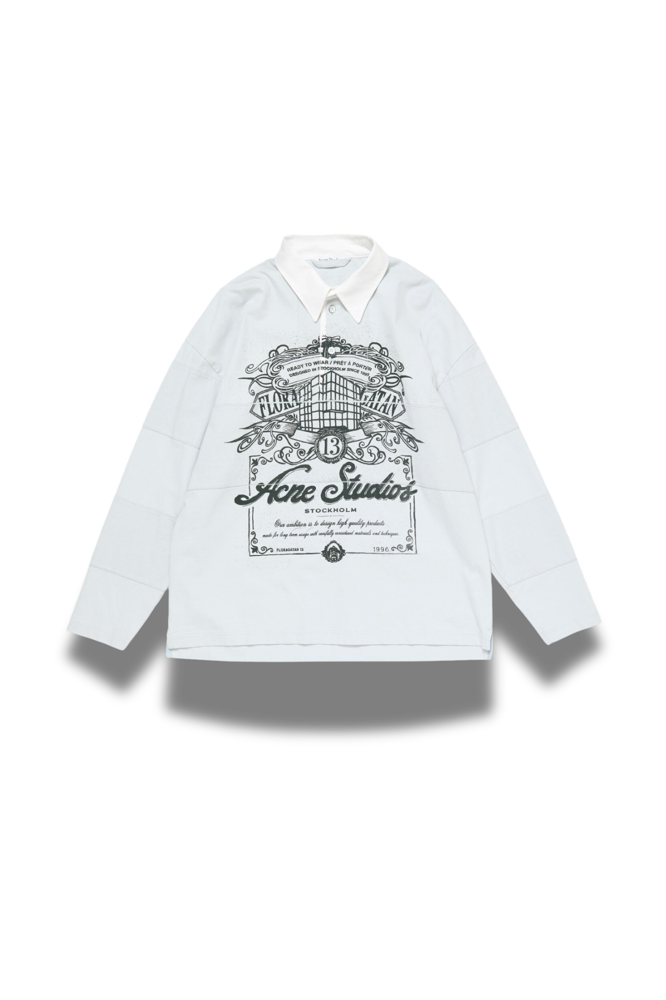
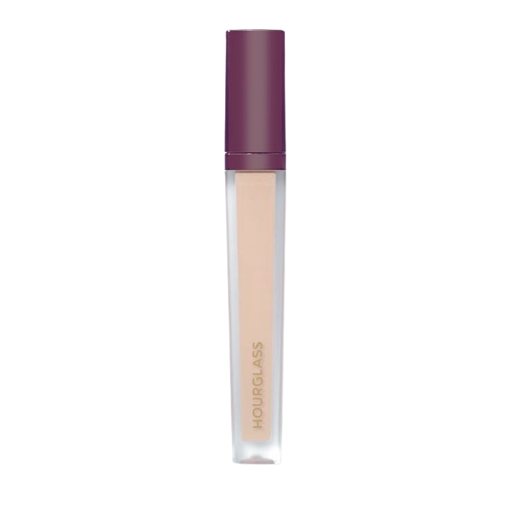
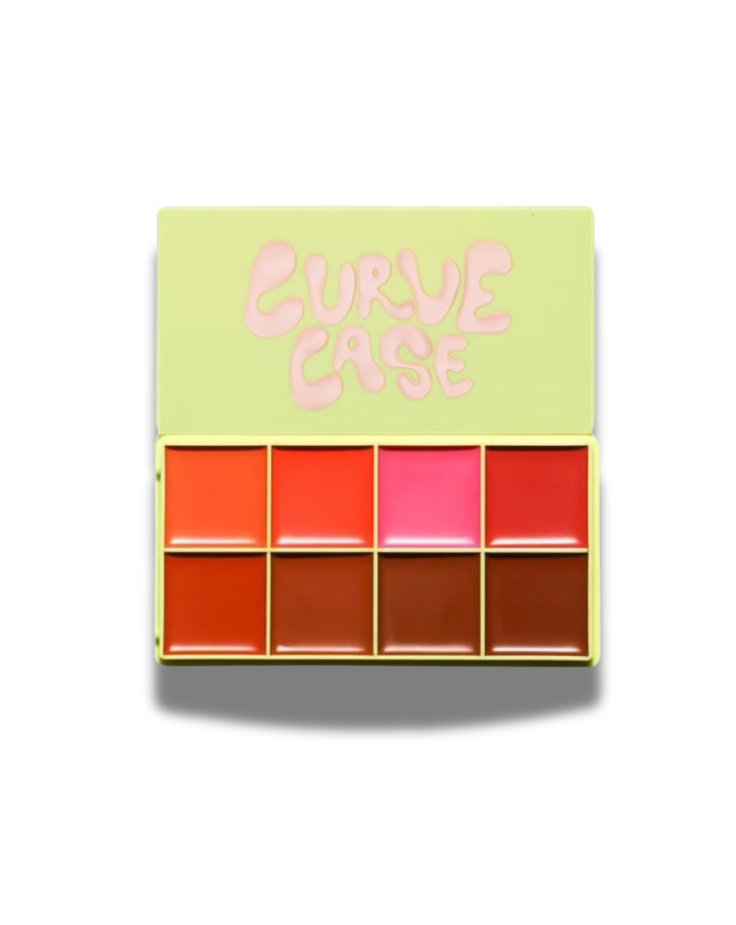
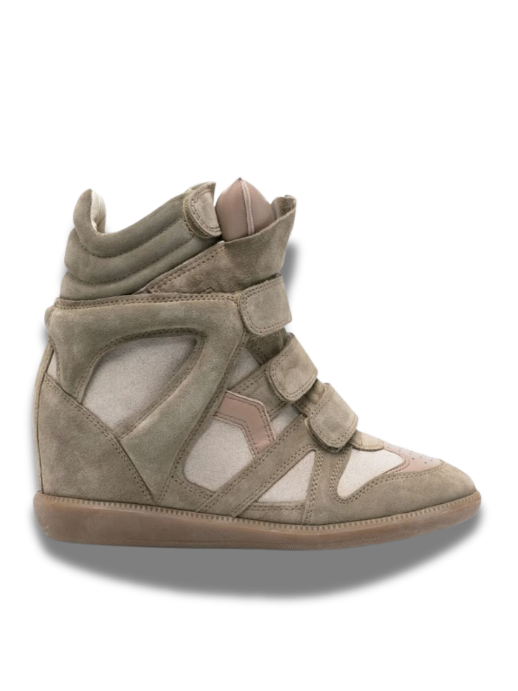

Hi Diary,
Hey Diary ‚Äî it‚Äôs BamBam. I‚Äôm a Brooklyn-born fashion girl and a 24-year-old software engineer with big taste. This diary is where I blend code with couture: outfit hunts, sample sales, designer dupes, beauty finds, and the little NYC moments that make a look feel legendary. I‚Äôm here to archive the fits, the fabric, and the feelings ‚Äî while building apps that make fashion easier (and way more fun). If you‚Äôre into pink gloss, clean lines, chrome details, and bold ideas, you‚Äôre in the right place. Let‚Äôs shop smart, style loud, and keep it kind. Welcome to my fashion diary. üíï